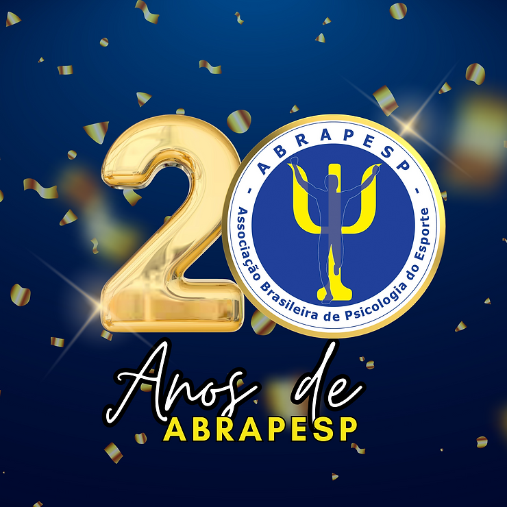

Na Assembleia Extraordinária realizada no dia 18 de fevereiro de 2024 foi lançado o logo comemorativo dos 20 anos da ABRAPESP. Ele será utilizado durante todo ano de 2024 como emblema oficial da associação.
O intuito da diretoria com essa primeira ação é ter um ano comemorativo das conquistas realizadas nesses 20 anos de atuação junto a sociedade e aos psicólogos do esporte do Brasil. Assim como também reverenciar a história já construída até então, prestigiando a memória institucional.
A ideia do logo comemorativo veio do IX Congresso, realizado em novembro de 2023 em Petrópolis, o qual teve como tema “A Psicologia do Esporte no Brasil no século XXI – 20 anos de ABRAPESP”. Durante o evento, diversas falas foram complementares e retomaram importantes capítulos da construção e efetivação da associação.
O exercício de revisitar a história fortaleceu nos presentes a razão de existir da associação, assim como a importância de fazer parte dessa construção de forma conjunta. O logo foi compreendido como a representação gráfica de toda essa potência.